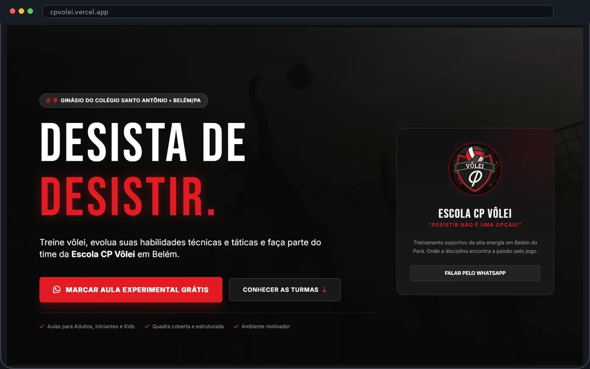

Escola CP Vôlei
Site desenvolvido para uma escola de vôlei em Belém, com comunicação de alta energia e foco na captação de novos alunos.

Contexto
A comunicação precisava transmitir energia, movimento e confiança, além de explicar rapidamente como funciona a escola para novos alunos e responsáveis.
O trabalho partiu da necessidade de criar uma experiência própria para a marca, organizada em torno do que o visitante realmente precisa entender antes de entrar em contato.
Objetivo
Apresentar as turmas e transformar o interesse do visitante em contato para aula experimental.
A solução prioriza caminhos curtos, hierarquia de informação e chamadas claras para a próxima ação, sem transformar a página em uma sequência cansativa de blocos.
Solução
O site organiza proposta, informações da escola, modalidades e chamadas para contato direto, criando uma jornada simples até o WhatsApp.
O resultado é uma experiência digital coerente com o posicionamento do negócio e preparada para apoiar a aquisição de novos contatos.
Design & Interface
A interface usa uma linguagem visual esportiva e dinâmica, com hierarquia forte para destacar benefícios e ações principais.
Responsividade
A estrutura foi organizada para manter a leitura e os CTAs claros também no celular, especialmente para acessos vindos das redes sociais.
Entrega
Website institucional publicado para apresentação da escola e geração de novos contatos.
Quer uma experiência digital assim para o seu negócio?
Conte um pouco sobre o seu projeto e vamos entender juntos o melhor caminho.